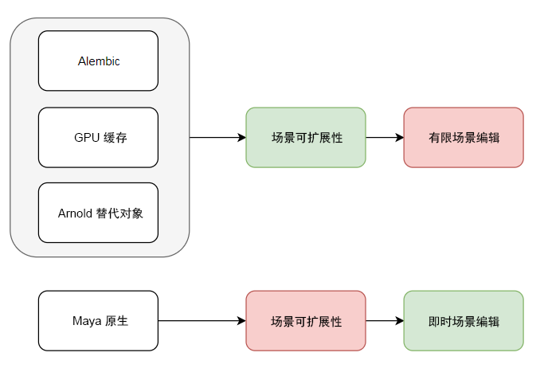
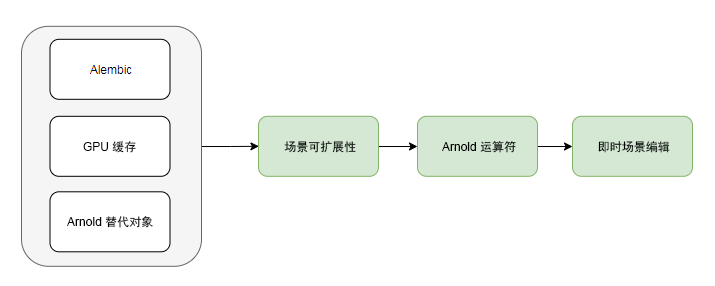

| “默认”外观 | 外观 A | 外观 B | 外观 C |
使用运算符应用多个着色器
运算符可用于通过在渲染时指定着色器来应用不同的外观。这可以在流程阶段结束时为您提供额外的控制。它可以是一款功能强大的工具，在渲染 Alembic 文件和程序/替代对象时特别有用，在这些情况下，用户可能需要将着色器指定给几何体的各个部分。
在本教程中，我们将介绍如何完成机器人角色的外观制作。这将涉及导出材料和外观，格式如下：
使用 Alembic 作为几何体传输。

Alembic 文件、GPU 缓存和 Arnold 替代对象对您使用渲染时阴影效果实现的结果的灵活性具有一定的限制
运算符可以为您大大提高在渲染时指定着色器的灵活性
要下载机器人 Alembic 文件，请单击此处。
本教程将演示使用运算符进行外观制作的功能。我们开始吧！
非常感谢 Nikola Milosevic 为本教程提供的帮助。